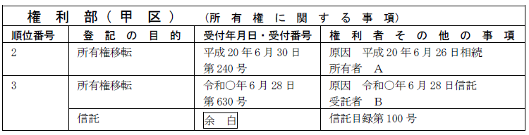
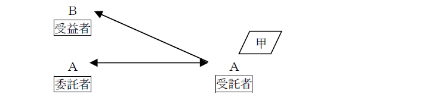
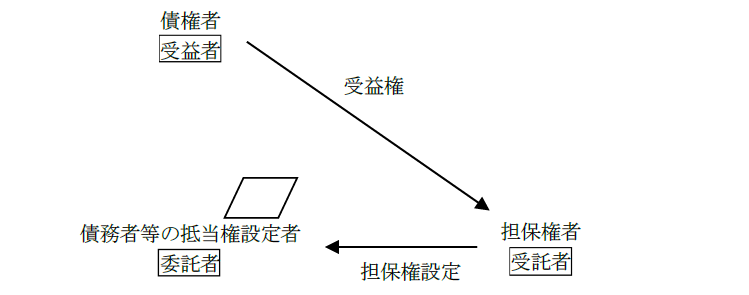
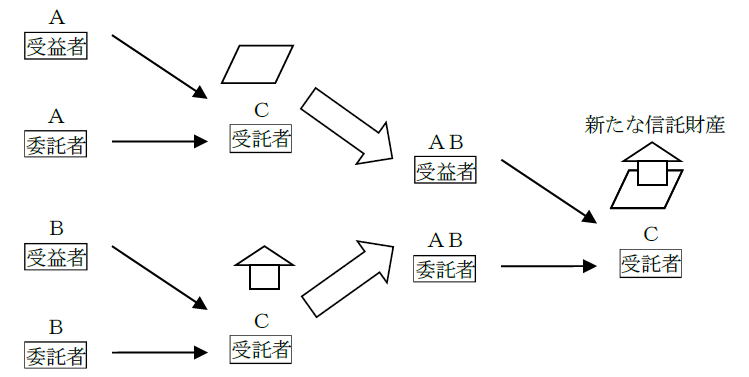
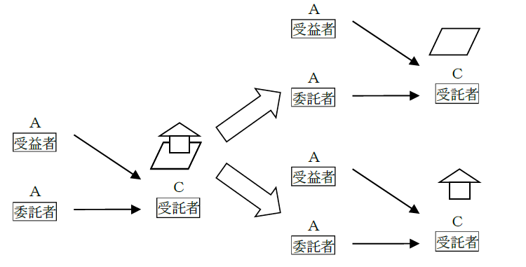

第１編 各 論
第９章 信託の登記
第１節 信託の設定の登記
1. 信託の意義
信託とは、委託者が受託者に対して、財産の管理又は処分及びその他目的達成のために必要な行為をさせることである（信託法2条1項）。
ex.財産を有するＡ（委託者）が、その財産の有効活用のために、Ｂ（受託者）に対して信託契約を締結し、その財産をＢに管理してもらう。
2. 受益者
受益者とは、信託によって利益を受ける者のことである。上記の例においては、委託者であるＡが受益者でもあるが、第三者を受益者とすることもできる。
3. 信託登記の申請方法
信託により、信託財産は受託者に属する財産となり、当該財産が受託者に移転することになる。もっとも、信託財産は、受託者の固有財産とは区別すべきものであるから、当該財産が信託財産であることも公示しなければならない。そのための登記が信託の登記である。
信託の登記の申請は、当該信託に係る権利の保存、設定、移転又は変更の登記の申請と同時にしなければならない。
信託の登記の申請は、当該信託に係る権利の保存、設定、移転又は変更の登記と一の申請情報によって、受託者が単独ですることができる（98条1項、2項、不登令5条2項）。
【申請例131 信託の登記 所有権移転及び信託】
事例： 令和○年6月28日、Ａは、自己の所有する甲土地を、Ｂに信託した。土地の課税標準の額は1000万円である。

4. 申請情報の内容
(1) 登記の目的
所有権を移転させる場合、「所有権移転及び信託」とする。
(2) 登記原因及びその日付
登記原因は、「信託」とし、日付は、信託契約成立日であるのが原則である。
(3) 申請人
所有権移転登記は原則どおり共同申請だが、信託の登記は、受託者の単独申請が認められている（98条2項）。
また、受益者又は委託者は、受託者に代わって信託の登記を申請することができる（99条）。
(4) 添付情報
(a) 登記原因証明情報（不登令別表65添付情報イ、ロ）
(b) 信託目録に記録すべき情報（不登令別表65添付情報ハ）
信託登記がなされた場合、登記官によって信託目録が作成される（97条3項）。そのため、申請人は、信託目録に記載すべき不動産登記法97条1項各号に掲げる事項を提供しなければならない。
信託の登記の登記事項（不動産登記法97条1項各号）
| ①委託者、受託者及び受益者の氏名又は名称及び住所 |
| ②受益者の指定に関する条件又は受益者を定める方法の定めがあるときは、その定め |
| ③信託管理人があるときは、その氏名又は名称及び住所 |
| ④受益者代理人があるときは、その氏名又は名称及び住所 |
| ⑤信託法（平成18年法律第108号）第185条第3項に規定する受益証券発行信託であるときは、その旨 |
| ⑥信託法第258条第1項に規定する受益者の定めのない信託であるときは、その旨 |
| ⑦公益信託ニ関スル法律（大正11年法律第62号）第1条に規定する公益信託であるときは、その旨 |
| ⑧信託の目的 |
| ⑨信託財産の管理方法 |
| ⑩信託の終了の事由 |
| ⑪その他の信託の条項 |
※②～⑥のいずれかを登記したときは、受益者の氏名又は名称及び住所の登記は不要。
※法人格なき社団を受益者として登記することはできない（昭59.3.2民3.1131）。
法人格なき社団は、登記名義人となれないが、その脱法行為として信託の登記が使われる恐れがあるためである。
(5) 登録免許税
ⅰ 所有権移転の登記
非課税（登免法7条1項1号）
ⅱ 信託の登記
不動産の価額×4/1000（登免法別表1.1.(10)イ）
5. 注意点
①受託者が2人以上ある信託では、信託財産は合有とされ（信託法79条）、共有とは異なり、持分が存在しない。よって、受託者の持分を記載する必要はない（不登令3条9号）。
②Ａ・Ｂ共有の不動産のＡの持分について、Ｃを受託者とする持分移転及び信託の登記がされた後に、Ｂが自己の持分を放棄した場合、Ｃへの持分移転の登記及びＣからの信託の登記を申請することになる（昭33.4.11民甲765）。
③敷地権の表示の登記をした建物の登記記録の表題部にＡが所有者として記録されている場合において、Ａが当該建物を目的として、Ｂを受益者、Ｃを受託者とする信託契約を締結したときは、Ｃは、自らを受託者とする所有権の保存及び信託の登記を申請することができる。実質的に所有権移転登記と異ならないから、不動産登記令5条2項の「移転」に当たると解されている。
6. 自己信託（信託法3条3号）
(1) 意義
自己信託とは、委託者＝受託者である信託のことである。
これは、例えば、幼児等管理能力がない者に、不動産を贈与する代わりに使うことができる。

自己信託は詐害行為目的に利用されるおそれがあるので（ex.強制執行を受けそうな財産を自己信託の信託財産として、強制執行を免れる。）、公正証書その他の書面又は電磁的記録で記載・記録する方法によるものとされている（信託法3条3号参照）。
(2) 申請情報の内容
自己信託の場合、委託者＝受託者であるため、委託者兼受託者が信託財産になった旨の変更登記及び信託の登記を申請する。
(a) 登記の目的
「信託財産となった旨の登記及び信託」である。
(b) 登記原因及びその日付
登記原因は「自己信託」とする。日付は、公正証書による場合は作成日、その他の書面による場合は受益者となるべき者に対する確定日付のある証書による通知日である（信託法4条3項）。
1. セキュリティトラスト
セキュリティトラストとは、抵当権を被担保債権と切り離して信託財産とする信託のことをいう。債務者等の抵当権設定者を委託者、担保権者を受託者、債権者を受益者として抵当権が設定されることになる。なお、債務者以外の者が設定者となることも可能である。

【申請例132 信託の登記 抵当権設定及び信託】
2. 申請情報の内容
(1) 登記の目的
抵当権を設定する場合、「抵当権設定及び信託」とする。
(2) 登録免許税
ⅰ 抵当権設定の登記：債権額×4/1000（登免法別表1.1.(5)）
ⅱ 信託の登記：債権額×2/1000（登免法別表1.1.(10)ロ）
第２節 信託の変更登記等
1. 受託者の任務の終了
受託者の任務は、信託の清算が結了した場合のほか、次に掲げる事由によって終了する（信託法56条1項）。
| ①受託者である個人の死亡 |
| ②受託者である個人が後見開始又は保佐開始の審判を受けたこと |
| ③受託者（破産手続開始の決定により解散するものを除く。）が破産手続開始の決定を受けたこと（ただし、信託行為に別段の定めがあるときは、その定めるところによる。） |
| ④受託者である法人が合併以外の理由により解散したこと（※） |
| ⑤受託者の辞任 |
| ⑥受託者の解任 |
| ⑦信託行為において定めた事由 |
※ 合併を理由とする解散の場合は、承継会社又は新設会社が、受託者の地位を承継する。この場合の登記原因は「年月日受託者合併による変更」である。
2. 受託者の変更の登記の申請
(1) 受託者の変更の登記の申請方法
(a) 受託者が交代的に変更した場合
受託者の任務が終了し、新たに受託者が選任されたときは、受託者の変更による権利の移転の登記をする。
(b) 複数いる受託者のうちの1人の任務が終了した場合
受託者が2人以上いるときに、そのうちの1人の任務が100条1項の原因によって終了した場合は、他の受託者が単独で受託者の任務終了による権利の変更の登記をすることができる（100条2項）。この場合、他の受託者のみが、受託者となる。
【申請例133 信託の登記 受託者が交代的に変更した場合の登記】
事例： 令和○年7月28日、受託者Ｂの任務が終了し、新たな受託者としてＣが選任された。
【申請例134 信託の登記 複数いる受託者のうちの1人の任務が終了した場合の登記】
事例： 令和○年7月28日、甲土地甲区3番に「信託」を登記原因として所有権の登記名義人を有している受託者Ｂ、ＣのうちのＢについて後見開始の審判があった。
(2) 申請情報の内容
(a) 登記の目的
【受託者が交代的に変更した場合】
「所有権移転」、「○番抵当権移転」等と記載する。
【複数いる受託者のうち、1人の任務が終了した場合】
「○番合有登記名義人変更」と記載する。
(b) 登記原因及びその日付
【受託者が交代的に変更した場合】
登記原因は「受託者変更」と記載し、日付は変更が生じた日を記載する。
【複数いる受託者のうち、1人の任務が終了した場合】
登記原因は「受託者Ａ任務終了」等と記載し、日付は、受託者の任務が終了した日を記載する。
(c) 申請人
新受託者又は残存する受託者を登記権利者、任務が終了した受託者を登記義務者とする共同申請が原則である（60条）。したがって、受託者の辞任による所有権の移転の登記は、新受託者を権利者、前受託者を義務者として、共同で申請しなければならない。
もっとも、受託者の任務が、以下の事由により終了し、新たに受託者が選任されたときは、信託財産に属する不動産についてする受託者の変更による権利の移転の登記は新たに選任された受託者が単独ですることができる（100条1項）。
| ・死亡（上記1の①） |
| ・後見開始若しくは保佐開始の審判（上記1の②） |
| ・破産手続開始の決定（上記1の③） |
| ・法人の合併以外の理由による解散（上記1の④） |
| ・裁判所等の解任命令（上記1の⑥のうち裁判所等によるもの） |
(d) 添付情報
①登記原因証明情報（61条）
新受託者又は残存する受託者が単独で申請するときは、不動産登記法100条1項に規定する事由により受託者の任務が終了したことを証する市区町村長、登記官その他の公務員が職務上作成した情報及び新たに受託者が選任されたことを証する情報を提供しなければならない（不登令別表66添付情報、67添付情報）。
②その他の添付情報
通常の所有権移転登記等と同様の添付情報を提供する。
(e) 登録免許税
「受託者の変更に伴い受託者であった者から新たな受託者に信託財産を移す場合における財産の移転の登記」に当たるので、非課税である（登免法7条1項3号）。
3. 登記官の職権による信託目録の変更の登記
登記官は、信託財産に属する不動産について次に掲げる登記をするときは、職権で、信託の変更の登記をしなければならない（101条）。
ⅰ 新受託者の就任（信託法75条1項）又は受託者の任務の終了（同条2項）の規定による権利の移転の登記
ⅱ 受託者が2人以上ある信託においてその1人の任務が信託法56条1項各号に掲げる事由により終了した場合の権利の変更の登記（信託法86条4項本文）
ⅲ 受託者である登記名義人の氏名若しくは名称又は住所についての変更の登記又は更正の登記
つまり、受託者の交代等による登記を申請する場合に、別途信託目録の変更登記を申請する必要はないということである。
4. 嘱託による信託目録の変更の登記
裁判所書記官は、受託者の解任の裁判があったとき、信託管理人若しくは受益者代理人の選任若しくは解任の裁判があったとき、又は信託の変更を命ずる裁判があったときは、職権で、遅滞なく、信託の変更の登記を登記所に嘱託しなければならない（102条1項）。
5. その他
信託の受託者の任務が解任によって終了し、その後に新受託者が選任された場合における受託者の交替による所有権移転登記の登記原因日付は、前受託者の任務が終了した日となる。信託法上、前受託者の任務が解任により終了した場合に、新受託者が就任したときは、前受託者の任務が終了した時に、その時に存する信託に関する権利義務を前受託者から承継したものとみなされるからである（信託法75条1項、56条1項6号）。
1. 申請による信託の登記の変更
職権又は嘱託によって変更の登記ができる場合を除いて、信託の登記の登記事項に変更が生じた場合には、受託者は、遅滞なく、信託の変更の登記を申請しなければならない（103条1項）。受託者は、この信託の変更の登記を単独で申請する。
ex.受益権を売買したことによる売買を登記原因とする委託者変更の登記
委託者の地位を移転したことによる受益者変更の登記
また、この変更の登記は、受益者又は委託者が受託者に代位して申請することができる（103条2項、99条）。
この場合も、代位原因証明情報を申請情報と併せて提供しなければならない（不登令7条1項3号）。代位原因証明情報としては、信託契約証書等、自己が信託契約上において受益者又は委託者であることを証する情報が挙げられる。もっとも、登記の目的たる不動産が信託財産であることを証する情報の提供は、不要である。
2. 信託目録の記録の変更
登記官は、信託の変更の登記をするときは、信託目録の記録を変更しなければならない（不登規176条3項）。
1. 信託財産の処分
(1) 意義
信託財産である金銭によって不動産を取得した場合には、当該不動産について売主から受託者に対して所有権移転登記を申請するとともに、信託の登記を申請することになる。所有権移転の登記と信託財産の処分による信託の登記は、同一の申請情報で申請する必要はないが、以下のように同一の申請情報で申請することもできる。
【申請例135 信託の登記 所有権移転及び信託財産の処分による信託】
事例： 令和○年6月28日、受託者Ｂは、信託財産金1000万円で、甲土地をＣから購入した。土地の課税標準の額は1000万円である。
(2) 申請情報の内容
第三者から受託者への所有権移転登記であるので、通常どおり所有権移転登記の登録免許税もかかる。
信託の登記の登録免許税額は不動産の価額の1000分の4となる（登免法別表1.1.(10)イ）。
2. 信託財産の原状回復
(1) 意義
受託者が信託財産である不動産を勝手に第三者に処分してしまったような場合、委託者は受託者に対し、失った不動産の代わりとなる不動産を取得するよう請求することができる。このような場合に受託者が取得した不動産は信託財産となるため、当該不動産について、「信託財産に属する旨の登記」をすることができる。
ex.Ａを委託者、Ｂを受託者とする信託契約に基づき、ＡからＢに「信託」を原因とする所有権移転登記がなされている甲土地をＢが勝手にＣに贈与した。この場合、ＡはＢに対し、失った甲土地の代わりの土地を取得するよう請求することができ、Ｂが代わりに取得した不動産は信託財産となる。
所有権移転の登記と信託財産の原状回復による信託の登記は、同一の申請情報で申請する必要はないが、以下のように同一の申請情報で申請することもできる。
【申請例136 信託の登記 所有権移転及び信託財産の原状回復による信託】
事例： 令和○年6月28日、受託者Ｂは、信託財産である甲土地を第三者に処分した。委託者Ａの請求により、Ｂは代わりとなる乙土地をＣから購入した。土地の課税標準の額は1000万円である。
(2) 申請情報の内容
所有権移転登記については、買主（受託者）が登記権利者、売主が登記義務者となる共同申請によることになる（60条）。
信託財産の原状回復の場合の信託の登記は、受益者又は委託者が受託者に代位して申請することができる（99条）。この場合には、当該原状回復に係る所有権移転の登記の申請と同一の申請情報によらずに、信託の登記のみの申請をすることができる。
1. 意義
信託財産に属する不動産に関する権利が移転、変更又は消滅により信託財産に属しないこととなった場合には、信託の登記の抹消を申請することになる。
| 抹消するパターン | 具体例 |
| ①信託財産の処分による場合 | 信託財産を受託者から第三者に売却した |
| ②信託終了の場合 | 信託終了事由の発生 |
| ③受託者の固有財産に属した | 信託契約の内容等 |
この場合における信託の登記の抹消の申請は、当該権利の移転の登記若しくは変更の登記又は当該権利の登記の抹消の申請と同時にしなければならない（104条1項）。
なお、この場合における信託の登記の抹消は、受託者が単独で申請することができる（104条2項）。
※単独受託者が死亡した場合、受託者の任務は終了するのであって（信託法56条1項1号）、受託者の相続人に任務が承継されるわけではない（信託法74条参照）。
2. 信託終了による登記申請
【申請例137 信託の登記 所有権移転及び信託登記の抹消】
事例： 令和○年6月28日、委託者Ａと受託者Ｂの信託契約について信託終了事由が発生したため、信託契約が終了した。土地の課税標準の額は1000万円である。なお、当該信託契約の受益者はＡのみである。
(1) 申請人
所有権移転登記は委託者と受託者の共同申請によるが、信託の登記の抹消については受託者の単独申請による。
(2) 登録免許税
委託者のみが信託財産の元本の受益者である信託の登記がされている不動産を受託者から受益者に移す所有権の移転の登記は、登録免許税が非課税となる（登免法7条1項2号）。
3. 受託者の固有財産となった場合の登記申請
信託財産に属する財産を固有財産に帰属させることは、利益相反行為として、原則として制限されるが（信託法31条1項1号）、受益者の承諾を得たとき等は、固有財産に帰属させる行為をすることができる（信託法31条2項）。
【申請例138 受託者の固有財産となった旨の登記及び信託登記の抹消】
事例： 令和○年6月28日、信託財産である甲土地が、受託者Ｂの固有財産となった。なお、当該信託契約の受益者はＣである。土地の課税標準の額は1000万円である。
(1) 登記の目的
「受託者の固有財産となった旨の登記及び○番信託登記抹消」である。
(2) 登記原因及びその日付
原因は「委付」であり、日付は委付がなされた日である。
(3) 申請人
受託者を登記権利者、受益者を登記義務者とする共同申請による。信託の登記の抹消は受託者の単独申請による。
(4) 添付情報
・印鑑証明書
登記義務者である受益者の印鑑証明書を添付する。
※ 受益者（信託管理人がある場合は、信託管理人）が登記義務者である場合、登記識別情報の提供は不要である（104条の2第2項後段）。受益者は登記名義人ではないので、登記識別情報をそもそも通知されていないからである。
※ 信託財産を受託者の固有財産とする変更登記を申請する場合、信託の登記後に所有権移転仮登記を受けた第三者の承諾を証する情報の提供を要しない（昭41.12.13民甲3615）。
当該変更登記の実質は不動産登記法66条の規定による変更登記ではなく所有権移転の登記である。また、信託関係の終了によって信託関係は将来に向かってのみ消滅するので、信託登記後の第三者の所有権移転仮登記の効力にはなんらの影響も及ぼさないため、当該信託登記の抹消について当該仮登記権利者には利害関係がないためである。
信託の併合とは、受託者を同一とする2以上の信託の信託財産の全部を一の新たな信託の信託財産とすることをいう（信託法2条10項）。
信託の併合は、従前の各信託の委託者、受託者及び受益者の合意によってすることができる（信託法151条1項前段）。
なお、信託の併合をする場合には、債権者の異議手続（債権者保護手続）をとる必要がある場合がある（信託法152条）。
【信託の併合】

【信託の分割】
